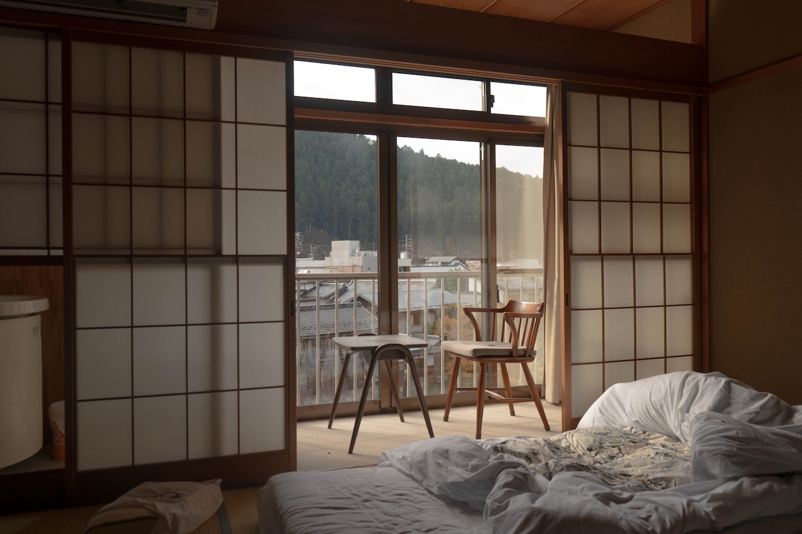

創業より受け継がれてきた石井花壇の和の造り
温海の雄大な絶景を堪能していただけるように設計された客室
ゆるやかに流れ行く時間に身を委ねて
-

温泉付き客室
温海の源泉かけ流し露天風呂付き客室になります。
あなただけの上質な安らぎのひとときを。＊部屋数に限りがございます。
＊洗い場はないため、お体を先に大浴場でお流しになって頂く必要があります。 -

庭園付き客室
庭園付きの客室になります。
お庭を見ながら、ほっとするひとときをお過ごしください。＊お庭は複数のお客様と囲む形になります。
＊部屋数に限りがあります
＊ご希望の方は「お抹茶/500円」をルームサービスさせていただきます。 -

一般客室
最もベーシックな客室になります。伝統の中にモダンさを取り入れた
内装となっており、とても過ごしやすくしていただけます。＊全室お部屋より日本海を望むことができます。